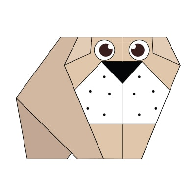
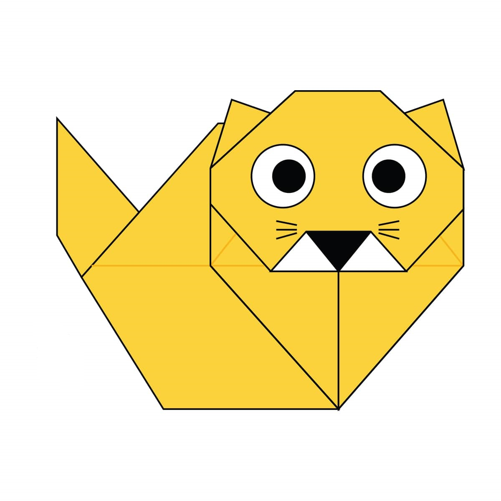
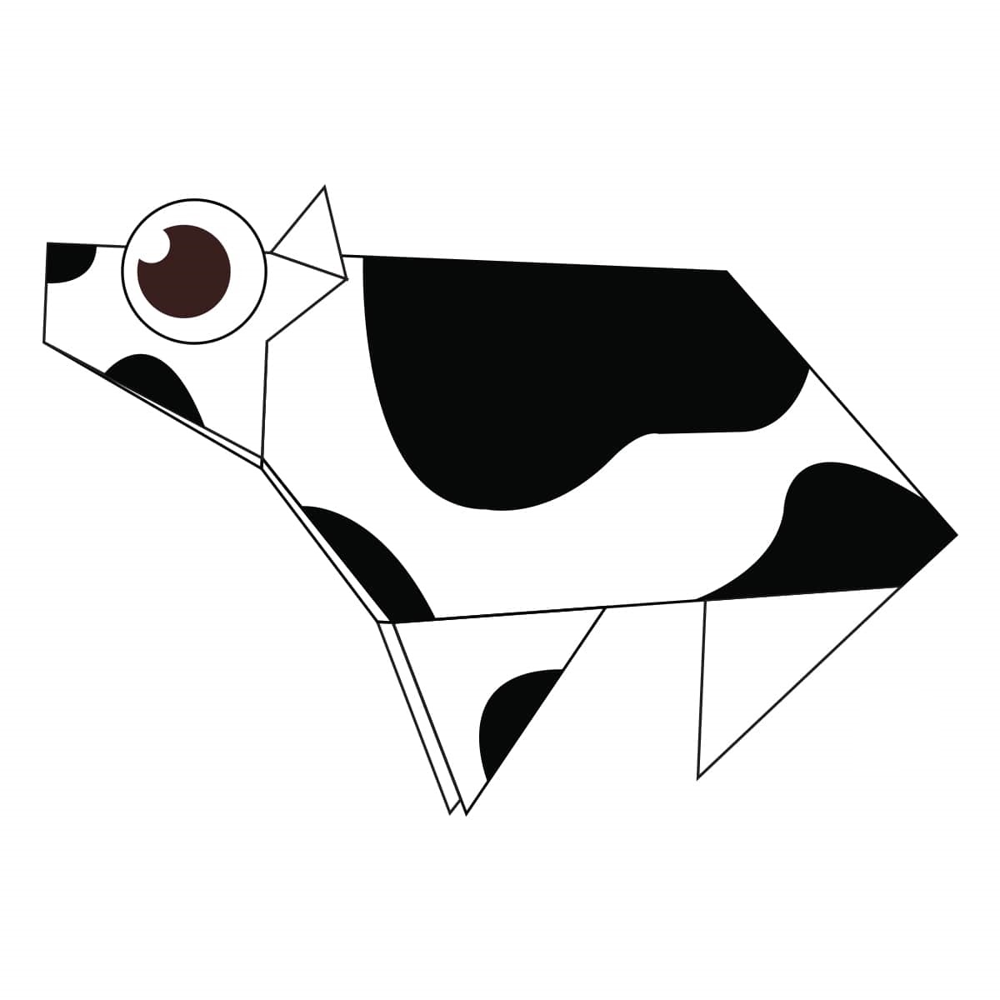

1. Chameleon

Video Tutorial
Interesting Facts About Chameleons
- Chameleons are reptiles that are part of the iguana suborder.
- Changing skin colour is an important part of communication among cheameleons.
- Most chameleons have a prehensile tail that they use to wrap around tree branches.
2. Pigeon

Video Tutorial
Interesting Facts About Pigeons
- Pigeons ae incredibly intelligent and complex animals.
- Pigeons are reowned for their outstanding navigational abilities..
- Pigeons have excellent hearing.
3. Camel

Video Tutorial
Interesting Facts About Camels
- Camel's ears are furry.
- Camel can move easily across the sand because of their specially designed feet.
- When they find water, they will drink as much as possible.
4. Panda

TEST
Interesting Facts About Pandas
- An adult panda weight more than 45 kilos (100 pounds), and can be about 1.5 meters (5 feet) long!
- Giant pandas are good at climbing trees and can also swim.
- Pandas go from pink to white and black (or brown).
5. Teddy

TEST
Interesting Facts About Teddies
- Teddy bears got their name from the story that Teddy Roosevelt refused to shoot a bear cub while on a hunting trip in 1902.
- The Oxford English Dictionary dates the first use of the term teddy bear to 1906.
- The first toy stuffed bear was created by German toymaker Margarete Steiff. She created a soft plush with movable arms and legs and a friendly face after taking her nephew to the zoo in 1903.
6. Cicada

TEST
Interesting Facts About Cicadas
- Cicadas can survive a huge fall as babies, or nymphs. They are about the size of a grain of rice when they drop from a tree branch to the ground and start digging.
- The loud whirring or buzzing sound you hear is an all-male cicada chorus. (Females make a much quieter sound by flicking their wings.) Cicadas don’t sing at night, so don’t blame them if you can’t sleep.
- Most have red-orange eyes. But occasionally cicadas have blue, white or grayish eyes.
7. Dog
TEST
Interesting Facts About Dogs
- Their sense of smell is at least 40x better than ours.
- Dogs can sniff at the same time as breathing.
- Dogs don’t sweat like we do.
8. Cat
TEST
Interesting Facts About Cats
- There are over 500 million domestic cats in the world.
- Cats and humans have been associated for nearly 10000 years.
- Cats conserve energy by sleeping for an average of 13 to14 hours a day.
9. Cow
TEST
Interesting Facts About Cows
- There are over 800 different cattle breeds recognized worldwide.
- Cows have no upper front teeth. Therefore, when they’re eating food, they press their sharp bottom teeth against the top hard palate of their mouth to cut blades of grass.
- Cows have an acute sense of smell and can detect odors up to six miles away.